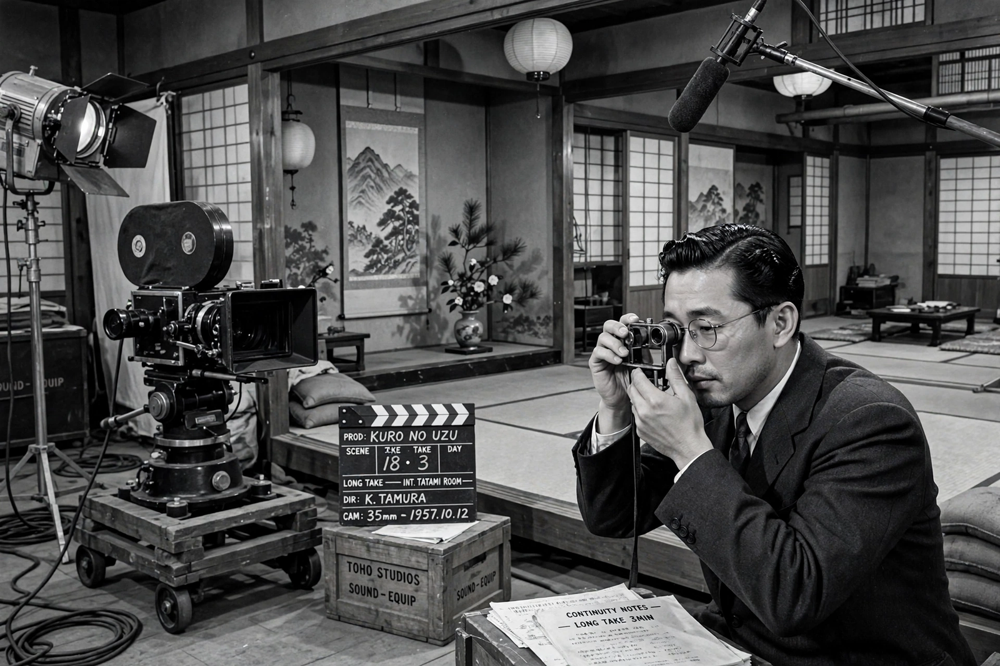

| Kenji Mizoguchi | |
| Born | May 16, 1898, Tokyo, Japan |
|---|---|
| Died | August 24, 1956 (aged 58), Kyoto, Japan |
| Occupation | Film director, screenwriter |
| Years active | 1923–1956 |
| Notable work | Ugetsu, Sansho the Bailiff, The Life of Oharu |

Kenji Mizoguchi (溝口 健二, Mizoguchi Kenji; May 16, 1898 – August 24, 1956) was a Japanese film director and screenwriter regarded, with Akira Kurosawa and Yasujirō Ozu, as one of the supreme masters of Japanese cinema. His films are noted for their long takes, fluid camera movement, and compassionate focus on the suffering of women in Japanese society.
Born in Tokyo, Mizoguchi was apprenticed to a textile designer and worked as an advertising illustrator before briefly becoming an actor at the Nikkatsu studio in 1920. He began directing in 1923 and made dozens of films in the silent and early sound eras; nearly all of his silent work is lost. His reputation rests largely on his final decade, when films such as The Life of Oharu (1952), Ugetsu (1953), and Sansho the Bailiff (1954) won major prizes at the Venice Film Festival and established his international standing.
Mizoguchi favored the "one scene, one shot" approach, using a constantly gliding camera and carefully choreographed deep-space compositions to avoid fragmenting scenes with cuts. Recurring themes include the exploitation and quiet endurance of women, the cruelty of social hierarchy, and spiritual redemption through suffering — rendered without sentimentality. His frequent collaborators included screenwriter Yoshikata Yoda and actress Kinuyo Tanaka, who later became a pioneering director herself.
Mizoguchi died of leukemia in 1956 while preparing a new film. Directors from the French New Wave to modern critics' polls have ranked Ugetsu among the greatest films ever made.